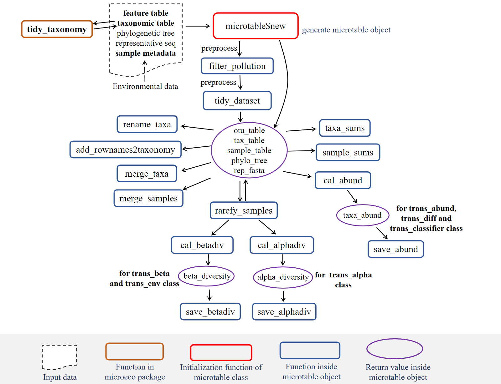
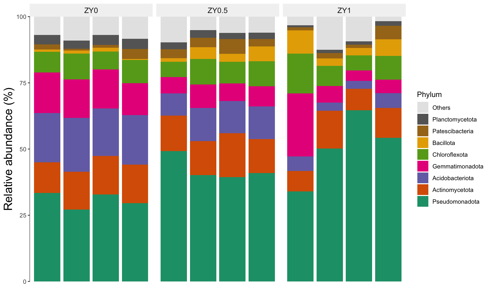
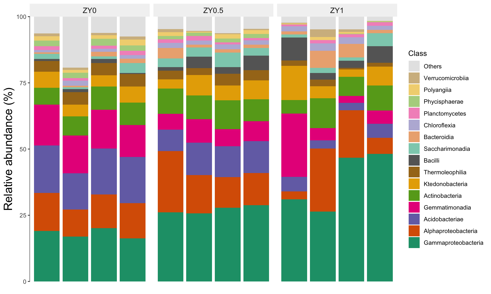
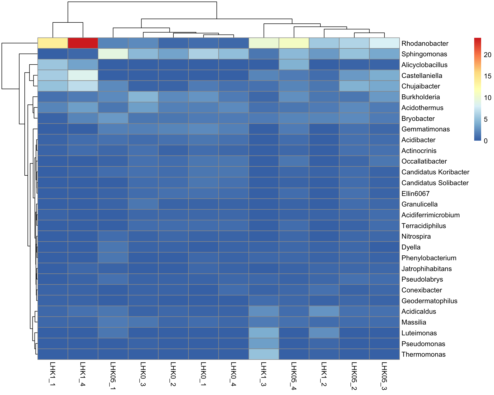
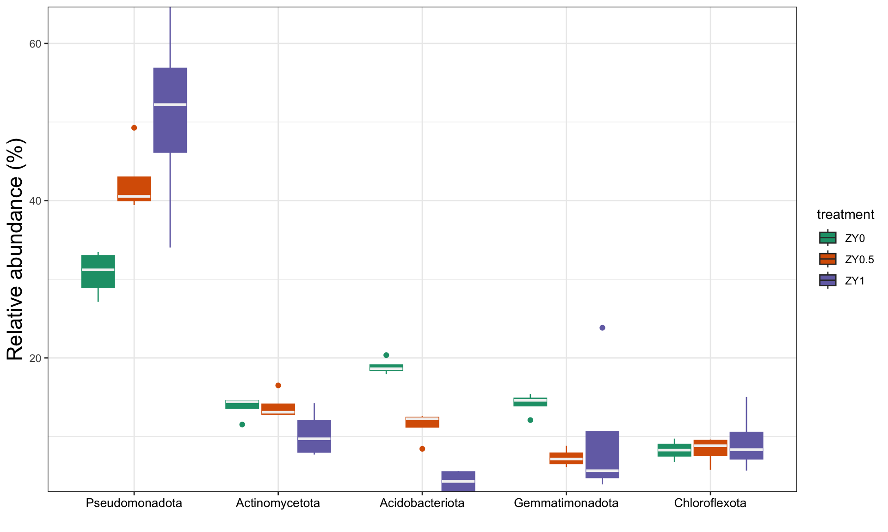

2 群落结构分析
2.1 概述
在前一章中，我们使用 DADA2 对原始测序数据进行了预处理，得到了 ASV 表、分类表和样本表。本章将基于这些数据进行群落结构分析——微生物组数据分析的第一步。
2.1.1 什么是群落结构分析？
群落结构分析旨在回答两个基本问题：
- “样本中存在哪些微生物？” —— 识别群落的成员组成
- “它们的相对丰度如何？” —— 了解各成员在群落中的占比
通过可视化物种组成，我们可以：
- 了解群落概貌：识别优势菌群，把握群落的基本特征
- 发现组间差异：比较不同处理组间的组成差异，形成初步假设
- 指导后续分析：为差异分析、网络分析等提供线索
2.1.2 为何群落结构分析是第一步？
在微生物组数据分析的标准流程中，群落结构分析通常作为探索性数据分析（EDA）的起点：
- 数据质量检查：通过物种组成图可以直观发现异常样本（如某样本组成与其他重复差异极大，可能存在污染）
- 初步假设生成：肉眼观察到的组间差异可以指导后续的统计检验方向
- 分析可行性评估：判断样本分组是否合理，是否需要调整分组策略
2.1.3 microtable 对象：分析的基础
本章所有分析都基于 microtable 对象。下图展示了 microtable 的内部结构和关键函数：
图注：矩形框内为函数，红色矩形表示重要函数，虚线框表示需要关注的关键对象
microtable 对象整合了三大核心数据表：
- otu_table：ASV × 样本的丰度矩阵
- sample_table：样本的元数据（如处理组、环境因子）
- tax_table：ASV 的分类学注释
本章将通过 trans_abund 类对 microtable 对象进行转化和可视化。
2.1.4 分析内容
物种组成分析通常在多个分类等级（门、纲、目、科、属）进行，以不同分辨率展示群落结构。常用的可视化方式包括：
| 图表类型 | 适用场景 | 优势 |
|---|---|---|
| 堆叠柱状图 | 展示各样本的物种组成比例 | 直观比较组间差异 |
| 热图 | 展示高丰度物种在各样本中的分布 | 适合大量分类群，可聚类 |
| 箱线图 | 比较不同组间某分类群的丰度分布 | 显示组内变异和统计差异 |
| 饼图 | 展示组平均组成的整体比例 | 适合展示整体构成 |
2.2 流程
在 microeco 包中，群落结构分析主要通过 trans_abund 类实现，其工作流程如下：
- 数据准备：确保
microtable对象已正确构建，包含 OTU/ASV 表、样本表和分类表 - 创建分析对象：使用
trans_abund$new()初始化分析对象，指定目标分类等级（如 Phylum、Genus） - 可视化：调用相应的绘图函数生成各种图表
trans_abund 类支持多种图表类型：
| 图表类型 | 函数 | 适用场景 |
|---|---|---|
| 堆叠柱状图 | plot_bar() |
展示各样本的物种组成比例 |
| 热图 | plot_heatmap() |
展示高丰度物种在各样本中的分布 |
| 箱线图 | plot_box() |
比较不同组间某分类群的丰度分布 |
| 饼图 | plot_pie() |
展示组平均组成的整体比例 |
2.3 实现
2.4 构建 microtable 对象
这里使用 microeco 软件包进行数据分析。
首先需要从数据保存的目录读取数据，并构建 microtable 对象。
PATH = "data/amplicon/processed"
list.files(PATH, full.names = TRUE)#> [1] "data/amplicon/processed/asv.fasta"
#> [2] "data/amplicon/processed/asvtab.csv"
#> [3] "data/amplicon/processed/metadata.csv"
#> [4] "data/amplicon/processed/taxtab.csv"metadata_file = file.path(PATH, "metadata.csv")
otu_table_file = file.path(PATH, "asvtab.csv")
tax_table_file = file.path(PATH, "taxtab.csv")
sequence_file = file.path(PATH, "asv.fasta")2.4.1 载入包
library(tidyverse)
library(microeco)
theme_set(theme_bw())2.4.2 OTU 表
otu_table = read_csv(otu_table_file)
otu_table = column_to_rownames(otu_table, var = names(otu_table)[1])在 microeco 包（以及大多数 R 语言生物信息包）的规范中，microtable 对 otu_table 的格式有严格要求：行必须是 Taxa（ASV/OTU），列必须是 Samples。
如果你的数据正好反过来了（行是样品，列是 ASV），需要在传入 otu_table 之前，使用 t() 函数对其进行转置，并确保它仍然是一个 data.frame。
otu_table <- as.data.frame(t(otu_table))为了让你直观理解 microtable 的结构逻辑，可以参考下图的对应关系：
- OTU Table: 行名必须对接 Taxonomy Table 的行名（即 ASV ID）。
- OTU Table: 列名必须对接 Sample Table 的行名（即 Sample ID）。
2.4.3 Sample 表
sample_table = read_csv(metadata_file)
sample_table = column_to_rownames(sample_table, var = names(sample_table)[1])2.4.4 Taxonomy 表
taxon_table = read_csv(tax_table_file)
taxon_table = column_to_rownames(taxon_table, var = names(taxon_table)[1]) |>
mutate(Genus = if_else(str_detect(Genus, "Burkholderia"), "Burkholderia", Genus))2.4.5 构建对象
构建 microtable 对象。
mt = microtable$new(otu_table = otu_table, sample_table = sample_table, tax_table = taxon_table)
mt#> microtable-class object:
#> sample_table have 12 rows and 8 columns
#> otu_table have 7230 rows and 12 columns
#> tax_table have 7230 rows and 7 columns处理 Taxonmic 表格中的 NA 值。
- 删掉
Phylum == NA的 ASV（根本没比对上的垃圾序列）。
mt$tax_table = subset(mt$tax_table, !is.na(Phylum))
mt$tidy_dataset()- 为未知的 Genus 填充数据（自上级非 NA）。
# 该函数会自动查找分类表中的缺失值并填充
mt$tax_table <- tidy_taxonomy(mt$tax_table)
# 填充完成后，运行 tidy_dataset 同步一下
mt$tidy_dataset()2.4.6 门水平的物种组成
首先，我们在门（Phylum）水平上分析物种组成。这有助于把握群落的整体框架，因为门水平的分类群数量相对较少，易于解释。
t1 = trans_abund$new(dataset = mt, taxrank = "Phylum", ntaxa = 8)
t1$plot_bar(xtext_angle = 45, facet = "treatment", xtext_keep = FALSE)
参数说明：
taxrank = "Phylum"：指定在门水平汇总数据ntaxa = 8：选择丰度最高的 8 个门，其余归为 “Others”facet = "treatment"：按处理组分面展示xtext_keep = FALSE：不显示样本名称，使图形更简洁
2.4.7 纲水平的物种组成
进一步在纲（Class）水平上分析，可以获得更精细的分类信息。
t1 = trans_abund$new(dataset = mt, taxrank = "Class", ntaxa = 15)
t1$plot_bar(xtext_angle = 45, facet = "treatment", xtext_keep = FALSE)
2.4.8 属水平的热图
热图是展示大量分类群在多个样本中分布模式的有效方式。我们在属（Genus）水平上绘制热图，以观察高丰度属的分布特征。
t1 = trans_abund$new(dataset = mt, taxrank = "Genus", ntaxa = 30)
t1$plot_heatmap(pheatmap = TRUE, facet = "treatment")#> TableGrob (5 x 6) "layout": 6 grobs
#> z cells name grob
#> 1 1 (2-2,3-3) col_tree polyline[GRID.polyline.335]
#> 2 2 (4-4,1-1) row_tree polyline[GRID.polyline.336]
#> 3 3 (4-4,3-3) matrix gTree[GRID.gTree.338]
#> 4 4 (5-5,3-3) col_names text[GRID.text.339]
#> 5 5 (4-4,4-4) row_names text[GRID.text.340]
#> 6 6 (3-5,5-5) legend gTree[GRID.gTree.343]
热图解读要点：
- 颜色深浅表示相对丰度的高低（通常颜色越深丰度越高）
- 行聚类显示分类群在样本间的相似分布模式
- 列聚类显示样本间的组成相似性
2.4.9 箱线图比较组间差异
箱线图可以直观地展示特定分类群在不同处理组间的丰度分布差异。
t1 = trans_abund$new(dataset = mt, taxrank = "Phylum", ntaxa = 5)
t1$plot_box(group = "treatment", xtext_angle = 0)
2.5 结果
2.5.1 群落组成特征
从门水平的分析结果（图 2.2）可以看出，本研究土壤微生物组主要由以下几个门组成：
- 变形菌门（Proteobacteria）：通常是最丰富的门之一，包含多种代谢类型的细菌
- 放线菌门（Actinobacteria）：在土壤中广泛分布，参与有机物分解
- 酸杆菌门（Acidobacteria）：土壤中的常见类群，适应酸性环境
- 芽孢杆菌门（Bacillota，原 Firmicutes）：包含多种芽孢形成菌
2.5.2 处理组间差异的初步观察
通过对比不同处理组（ZY0、ZY0.5、ZY1）的柱状图，我们可以初步观察到：
- 优势门的相对比例变化：某些门在不同处理组间的相对丰度可能存在差异，这可能反映了处理条件对微生物群落的选择作用
- 群落均匀度：各组内样本的重复性较好，表明组内变异相对较小
2.5.3 热图揭示的精细模式
属水平的热图（图 2.4）揭示了更精细的分布模式：
- 核心微生物组：某些属在所有样本中均有较高丰度，可能代表土壤微生物组的核心功能类群
- 处理组特异性：部分属在特定处理组中富集，这些类群可能是后续差异分析的重点关注对象
2.5.4 分析与讨论
群落结构分析的结果为理解处理效应提供了初步线索。在本案例中：
环境适应性：不同处理条件（ZY0、ZY0.5、ZY1 可能代表不同施肥或处理强度）可能塑造了不同的微生物群落结构，反映了微生物对环境变化的适应
功能推断：基于已知的分类群功能特征，我们可以初步推测：
- 某些参与养分循环的门（如 Proteobacteria 和 Actinobacteria）的丰度变化可能与土壤肥力相关
- 酸杆菌门的相对丰度可能与土壤 pH 条件有关
后续分析方向：群落结构分析的结果可指导后续分析：
- 对于在柱状图中肉眼可见组间差异的分类群，可通过差异分析进行统计验证
- 热图中聚类在一起的分类群可能在功能上相关，可作为网络分析的候选对象
注意事项：物种组成分析展示的是相对丰度数据，在解释时需要注意组成性效应（Compositional effect），即一个分类群的相对丰度增加可能是由于其他分类群减少所致，而非其绝对丰度真正增加。
2.6 小提示
microeco 包的使用文档参见：https://chiliubio.github.io/microeco_tutorial。
- 使用
tidy_taxonomy()函数确保分类表格式统一，特别是处理未知分类等级时 - 绘制热图时，
pheatmap = TRUE参数可以生成更美观的聚类热图 - 箱线图中添加
add_sig = TRUE参数可以显示统计显著性标记（需先运行差异分析）